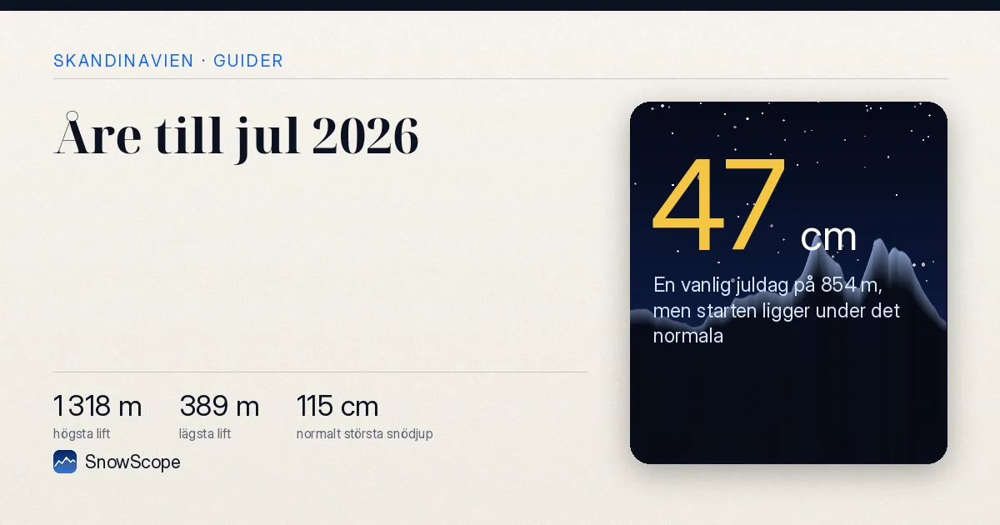

Åre till jul 2026: 47 cm en vanlig juldag på 854 m, men starten ligger under det normala
Åre har 25 cm snö högst uppe på Åreskutan den här lördagen 28 november, och på 854 m, ungefär vid mellanstationen, ligger 16 cm. En vanlig sista novembervecka har 31 cm där, så starten är tunnare än normalt. Till jul säger historiken följande: en vanlig juldag har 47 cm på den höjden, och i 59 % av 46 vintrar låg det mer än en halvmeter till nyår.
Se snöprognosen för Åre live i SnowScope-appenSnödjup, pudervarningar och 3D-kartan, gratis.
Läget i dag
Ingen nysnö på en vecka, och den närmaste veckan ger inte mycket: ungefär 1 cm till tisdag och 4 cm på toppen på sju dagar. Kylan är där, vilket betyder att snökanonerna i Åre by och på VM-backarna kan köra på nätterna.
Systemet går från 389 m vid sjön till 1 318 m på Åreskutan. I en tunn start är det Hummelbranten och de övre delarna av skutan som har natursnön; nedfarterna till byn bygger på kanonsnö.
| Vanligt på 854 m | Snödjup |
|---|---|
| 8 december | 35 cm |
| 15 december | 40 cm |
| 20 december | 44 cm |
| Juldagen | 47 cm |
| Nyårsdagen | 52 cm |
| Trettondagen | 57 cm |
Vad 46 vintrar säger om julen
Tabellen visar det vanliga förloppet på 854 m: 40 cm i mitten av december, 47 cm på juldagen, 57 cm på trettondagen. En vinter av fyra har mindre än 40 cm på juldagen, en av fyra mer än 56 cm.
Den snörikaste vintern i serien var 1987-88 med som mest 149 cm, den snöfattigaste 1990-91 med 63 cm. December ger vanligtvis 41 cm på den höjden; toppen kommer i början av april, kring 86 cm i mars och mer därefter. Julen är med andra ord början på Åres säsong, inte dess topp.
Hur julveckan brukar se ut
Mellandagarna är Åres mest fullbokade vecka, och liftkön vid Kabinbanan är längst runt tio på morgonen. Åre Björnen och Duved är de lugnare alternativen för familjer; Duveds nordsluttning håller dessutom snön bäst när det är tunt.
Nattåget från Stockholm och Göteborg gör Åre till den enda stora skidorten i Norden som man når utan bil. Åres snösida visar varje dag snödjupet nere, i mitten och på toppen.
Vanliga frågor
Blir det snö i Åre till jul? På Åreskutan och i de övre delarna nästan alltid, med siffrorna ovan. I byn vid sjön är det ingen garanti: ett mildväder i december kan ta bort snön på gatorna.
Är starten dålig? Under det normala på 854 m, men två normala decemberveckor räcker för att komma ikapp.
När är snön djupast? I slutet av mars och början av april, kring 82 cm. Vårskidåkningen är Åres starkaste kort.
Åres vinter i siffror
En vanlig februari har 81 cm på 854 m, en rik februari 93 cm och en fattig 66 cm. En fattig juldag, en vinter av tio, har 32 cm; en rik 72 cm. Den 20 december ligger det vanligtvis 44 cm och på julafton 46 cm. Säsongen med mer än 30 cm på den höjden börjar i snitt i slutet av november och varar till mitten av maj, nästan ett halvår. Det är därför Åre kan se tunt ut i slutet av november och ändå leverera en normal jul: december brukar ge mer än vad som ligger i dag.
För den som väljer vecka gäller samma regel som varje år: mellandagarna för stämningen och liften upp till Åreskutans topp när vädret tillåter, februari och mars för den djupa snön och de långa dagarna. Vårskidåkningen i april är Åres bäst bevarade hemlighet för utländska gäster.
Tips för skidåkare
- Boka julveckan, men räkna med kanonsnö i byn och natursnö på skutan.
- Åk Duved och Björnen i mellandagarna; Åre by är fullt från 26 december.
- Jämför med andra svenska orter i vår artikel om Idre Fjäll och på Skandernas snösida.
- Planera resan med resplaneraren.
Om siffrorna
Snösiffror: SnowScopes snökarta och prognos för i dag och vår historik över 46 tidigare vintrar för varje skidort (en uppskattning för området, inte skidortens egen rapport).
Officiella lavinprognoser: Lavinprognoser (Naturvårdsverket)
Citera den här rapporten
För forskning, undervisning eller press: siffrorna och diagrammen får återanvändas fritt under CC BY 4.0 med den här källhänvisningen.
SnowScope (2026), Åre till jul 2026: 47 cm en vanlig juldag på 854 m, men starten ligger under det normala, https://snowscope.app/blog/sv/2026/11/are-jul-2026-snochanser-46-vintrar-under-det-normala-i-slutet-av-november.html, hämtad 2026-11-28
SnowScope (Atlas Labs). (2026, November 28). Åre till jul 2026: 47 cm en vanlig juldag på 854 m, men starten ligger under det normala. SnowScope snow reports. https://snowscope.app/blog/sv/2026/11/are-jul-2026-snochanser-46-vintrar-under-det-normala-i-slutet-av-november.html
BibTeX
@misc{snowscope2026arejul2026snochanser46vi,
author = {{SnowScope (Atlas Labs)}},
title = {Åre till jul 2026: 47 cm en vanlig juldag på 854 m, men starten ligger under det normala},
year = {2026},
month = nov,
howpublished = {\url{https://snowscope.app/blog/sv/2026/11/are-jul-2026-snochanser-46-vintrar-under-det-normala-i-slutet-av-november.html}},
note = {Published 2026-11-28 14:07 UTC; accessed 2026-11-28}
}· CC BY 4.0 · Metoder, data och verktyg →
Åre: snö och temperatur efter höjd, i vinter jämfört med förra (verktyg) →
Följ Åre
Gratis: ett meddelande när nysnö är på väg, och prognosen varje morgon.